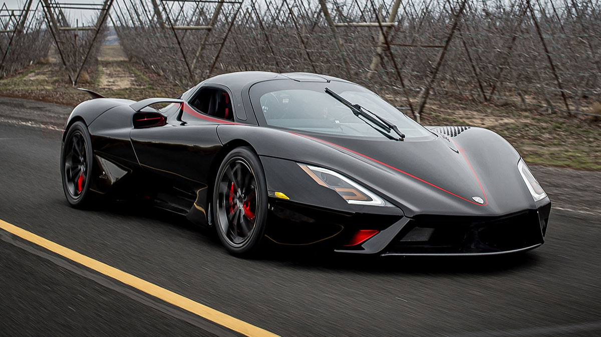

Undoubtedly the most important and relevant word in the modern world, performance, somehow found a way to insert itself into pretty much every single aspect of our lives today, from our love lives, to our work lives, all the way down to the computers we use, the smartphones, gadgets, not to mention, the cars we drive. So, it’s only right that we put one out for the consumers, collectors, enthusiasts, and others who can relate.
When you take a hot minute to look at how far technology has brought us, you can only wonder how some of the great innovations we enjoy today were made possible. Automakers struggled to produce performance cars that could hit 200 mph a few decades ago, and today, a new mark has been identified, and we now have production cars that exceed 300 mph.
While that is in no way meant to discredit some performance cars that will only max out at 170 mph or those compact, mid-size sedans that have up to 120 mph, in the world of fast cars, the 200 mph mark has long been beaten, and the only way is forward.
5. SSC Tuatara (283 MPH)

Every automaker has a poster car, and Shelby Supercar’s (SSC) is the Tuatara. For a vehicle with a price tag of $1.9 million, anything less than its current specs would have been somehow unacceptable. SSC found itself in some hot controversy last year after it claimed that the Tuatara broke the speed record by reaching 331.15 mph.
The American automaker was later accused of putting out false information as the video of the record was false, and there was another failed attempt to reach those speeds. SSC eventually admitted officially that the Tuatara supercar did not reach the originally claimed speeds of 331 or 301 mph during its top-speed run in Nevada last year. An excerpt from the announcement read, “We were truly heartbroken as a company to learn that we did not reach this feat, and we are in an ongoing effort to break the 300 MPH barrier transparently, officially, and undoubtedly.”
With that being said, the SSC Tuatara remains one of the world’s most powerful hypercars in 2022, with a top speed of 283 mph coming from a 5.9-liter flat-plane crank twin-turbocharged V8 engine, which helps it produce a best-in-class 1350 hp when on 91 octane fuel and up to a whopping 1750 hp when running on E85 ethanol. The car can range from 0 to 60mph in just 2.5 seconds.
4. Bugatti Chiron Super Sport 300+ (305 MPH)
The Chiron Super Sport 300+ was Bugatti’s fastest production car at some point. When the Bugatti Chiron Super Sport 300+ was introduced, it became the first hypercar to cross the 300 mph mark. It set the tone for other manufacturers to work with, and today, we now have hypercars with more than 300 mph top speeds, just like some of the ones we’ve discussed so far.
It’s hard to point out a downside to this vehicle as it is a good representation of an effortless balance between function and design. Featuring a monstrous 8.0-liter W16 quadruple-turbocharged engine that produces 1600 hp and 1180 lb-ft of torque, the hypercar can reach 60mph from a standstill point in just 2.3 seconds. The pricing for the Bugatti Chiron Super Sport 300+ starts from €3.5 million EUR, which is approximately $4 million USD at today’s exchange rate.
3. Bugatti Bolide (310 MPH)
French luxury car manufacturer Bugatti enjoyed massive success by producing the Chiron Super Sport 300+, one of the world’s fastest hypercars. This motivated them to return to their nest and build the Chiron a little brother, Bolide, only that it is faster than the former. Many expected that the Bolide would not be as fast as the Chiron Super Sport, but Bugatti had other ideas as they built this supercar to reach an estimated top speed of 310 mph.
Under the hood of the powerful Bugatti Bolide is an 8.0-liter quad-turbocharged W16 engine that produces 1825 hp and 1364 lb-ft of torque. With just 39.2 inches off the ground, it’s safe to say that there’s more to this car’s performance than its top speed. The Bugatti Bolide is one of the fastest cars in the world and one of the quickest, with a 0-60mph acceleration time of just 2.17 seconds.
2. Hennessey Venom F5 (311 MPH)
In the automotive industry, every production always has a storyline that takes people’s minds back in time, and that’s the same with every show in John Hennessey’s Venom line. When producing this hypercar, Hennessey wanted more than a tribute to the fastest type of tornado but also something that would blend with the narrative.
The Hennessey Venom F5 was produced, and it did break ground. Coming with a top speed of 311 mph was a difficult way to make a mark, but Hennessey couldn’t care less. The Hennessey Venom F5 is powered by a rear-mid-mounted 6.6-liter twin-turbocharged V8 engine that churns out 1817 horsepower and 1,193 lb-ft of torque, an industry-best feat. Unfortunately, the Venom F5 was produced in limited numbers of 24 units, so it might be challenging to get your hands on one in 2022.
1. Koenigsegg Jesko Absolut (330 MPH)

If you think the Hennessey Venom F5 is a performance beast, wait until you see the Koenigsegg Jesko Absolut in action. We see raw power at its finest whenever we look at this hypercar, all thanks to the brilliance of the Swedish auto manufacturer, Koenigsegg. When the Jesko Absolut was first introduced, it broke the record of the fastest car in the world and set a new world record for other brands to chase.
If you’re one of those asking what the quickest car in the world in 2022 is, at the time of writing, no other vehicle has been able to surpass or reach the 330 mph (531 km/h) top speed of the Koenigsegg Jesko Absolut, making it the fastest car in the world in 2022. This hypercar features a twin-turbocharged 5.0-liter V8 engine so powerful that it cranks out 1600 horsepower on E85 fuel and 1280 horsepower when running on regular gasoline, along with a torque of 1106 pound-feet.
The 2022 Jesko Absolut features the world’s lightest V8 crankshaft that weighs just 12.5 kg, a re-designed fuel injection system, and every surface element on the hypercar has been constructed to reduce drag or surrounding turbulence around it while increasing high-speed stability.